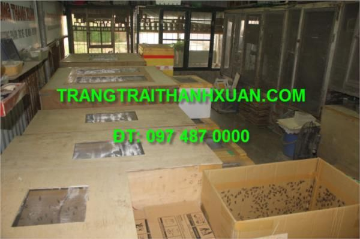
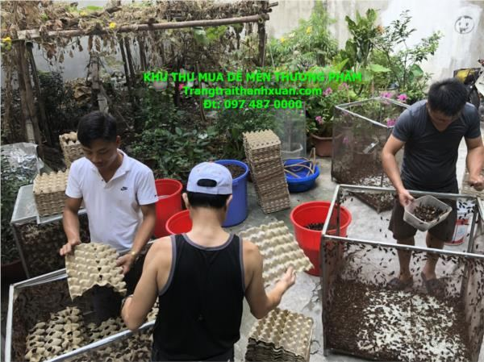
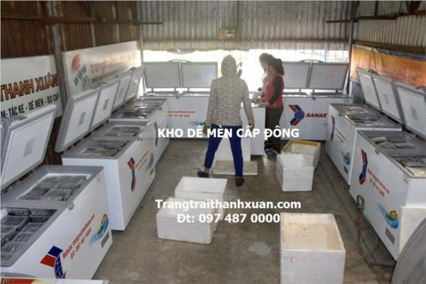

Dế mèn (dế Thái)
Dế Thái sinh trưởng tốt, sống tập trung, sinh sản nhiều, thu hoạch ngắn ngày và có đầu ra rất mạnh cả trong nước và xuất khẩu.

Trang trại cung cấp
Giá khay trứng dế
Giá thu mua
- Khay trứng dế Thái: nở đạt tiêu chuẩn 100%, bảo hành đổi mới miễn phí trên toàn quốc nếu trứng hỏng hoặc nở ít. Trứng thu từ thùng dế sinh sản có hàng vạn con bố mẹ.
- Dế mèn thương phẩm sống: bán buôn cho đại lý, chợ sinh vật cảnh, dân chơi chim, cá cảnh, gà cảnh.
- Dế mèn đông lạnh: cấp đông cho nhà hàng, quán nhậu, khách sạn, siêu thị và xuất khẩu.
- Dế làm cám: dế nguyên con nghiền trộn với ngô làm cám chăn nuôi giàu đạm.
Mua trứng giống một lần rồi tự nhân ra mãi mãi: lứa đầu xuất bán thương phẩm, giữ lại một phần dế bố mẹ làm giống cho các lứa sau.
Từ trứng đến xuất bán khoảng 40 ngày
Dế Thái phát triển và sinh sản quanh năm, sống theo đàn, nuôi tập trung số lượng lớn mà không đánh nhau.
- Ngày 0 – 8Ấp trứng trong thùng xốp đậy kín. Thấy ở đầu quả trứng có 2 mắt màu đỏ sẫm là trứng sắp nở.
- Ngày 1 – 15Dế con nhỏ như con kiến, nuôi trong thùng xốp, phân thải ít nên chưa cần dọn.
- Ngày 20 – 25Thu hoạch dế chim, đủ to làm mồi cho tắc kè, bọ cạp.
- Khoảng ngày 30Dế thịt nhú cánh, to và béo nhất. Thời điểm tốt để thu dế đông lạnh.
- Khoảng ngày 37Dế đực gáy, cánh chùm lưng, bắt đầu giao phối. Khoảng 5 hôm sau thì đẻ: cho khay cát ẩm vào thùng.
- Khoảng ngày 40Dế cái căng trứng nhất, trọng lượng tối đa, xuất bán lợi nhất.
Phương pháp đã được VTV2 phát sóng
Trang trại thay xô chậu bằng thùng bìa và thùng gỗ, dán băng dính vàng chống dế bò ra. Mô hình này tiết kiệm vốn, công sức và diện tích. Bấm vào từng mục để xem.
Chọn thùng nuôi
- Thùng xốp: nuôi dế nhỏ từ 1 đến 10–15 ngày tuổi. Đáy kín, chỉ cần dán một đường băng dính gần miệng thùng. Không dùng cho dế lớn vì dế gặm thủng và thùng không hút ẩm.
- Thùng carton (bìa): rẻ, hút ẩm tốt, không có mùi. Thùng 60cm × 60cm nuôi được khoảng 1–2 kg dế. Khoảng 15–20 m² là nuôi được.
- Thùng gỗ ván ép: đầu tư một lần dùng nhiều năm, giữ nhiệt tốt vào mùa đông. Thùng 60cm × 1,2m nuôi khoảng 5 kg dế thịt (khoảng 20 nghìn con nhỏ). Thùng 1,2m × 1,2m nuôi khoảng 10 kg dế thịt (khoảng 40 nghìn con nhỏ). Nên làm cao tối đa 60–70cm.
- Hồ gạch, xi măng: chỉ nên áp dụng vào mùa hè hoặc ở miền Nam.
Dụng cụ cần chuẩn bị
- Khoảng 10 thùng nuôi (xốp, bìa hoặc gỗ). Nắp đậy gắn lưới sắt mắt 1 li để tránh thạch sùng, tắc kè, chuột, thằn lằn ăn dế.
- Băng dính màu vàng sẫm bản 5cm, dán phía trong cách miệng thùng khoảng 10cm. Băng dính trắng dán kín khe hở dưới đáy.
- Giá thể cho dế leo: vỉ bìa trứng gà, bìa carton gập lại, cành lá phơi khô không rụng lá (nhãn, ổi, hồng xiêm, lạc, đỗ tương, ngô) dài 50–60cm.
- Đĩa hoặc khay nhựa cao 2–3cm đựng cát ẩm cho dế đẻ.
Thức ăn cho dế
Dế ăn nhiều loại rau, cỏ, củ, quả non, ngọt, mềm, nhiều nước. Rau cỏ phải rửa sạch, không có thuốc bảo vệ thực vật.
Cho ăn bổ sung cám gà con nghiền nhỏ: đạm, canxi, muối, tinh bột trong cám gà con thích hợp nhất với con dế, giúp rút ngắn thời gian nuôi và tăng trọng lượng rõ rệt.
Phân biệt dế đực, dế cái
- Dế đực: cánh nâu pha đen, cánh xoăn, bụng nhỏ hơn, không có máng đẻ trứng, kêu để ve vãn dế cái.
- Dế cái: cánh đen bóng mượt, bụng to vì có trứng, không kêu, có máng đẻ trứng ở đuôi giống cái kim khâu.
Chỉ phân biệt được khi dế bắt đầu vào tuổi sinh sản.
Cho dế đẻ và ấp trứng
Một thùng dế đẻ cần tối thiểu 1000 con trở lên để trứng được thụ tinh đủ. Trang trại luôn giữ mật độ gần 1 vạn con mỗi thùng đẻ và bổ sung giống mới liên tục để chống thoái hóa giống.
Thu khay trứng, kiểm tra độ ẩm rồi cho vào thùng xốp đậy kín. Không xịt nước liên tục vì nước đọng dưới đáy khay làm trứng bị ung. Ghi ngày dế đẻ lên khay; các khay đẻ cùng ngày cho vào cùng một thùng để khi thu hoạch dế đều con.
Lưu ý theo vùng miền
Kỹ thuật nuôi dế miền Bắc và miền Nam khác nhau hoàn toàn. Con dế rất dễ nuôi nhưng nếu không làm đúng kỹ thuật của từng vùng thì có thể bị bệnh và chết hàng loạt, ví dụ xịt nước vào thùng sẽ làm hỏng thùng và giá thể.
Ở miền Nam, trang trại hướng dẫn xây hồ nuôi bằng gạch, láng nền, lát gạch men phía trong miệng chuồng cho dế không bò ra.
Tài liệu trên website bà con tham khảo được khoảng 70%. Khi mua giống, trang trại cung cấp tài liệu nuôi dế đầy đủ, hướng dẫn bí quyết và tư vấn kỹ thuật trong suốt quá trình nuôi.
Bán dế về trang trại

Dế sống
- Thu khi 95% số dế trong thùng có cánh dài chùm lưng.
- Đóng thùng carton có dán băng dính vàng phía trong miệng, xếp bìa gập hoặc vỉ trứng cho dế bám, ghi số cân bì lên thùng.
- Gửi theo ô tô hoặc tàu, tối đa 1,5 ngày đường. Nhân viên trang trại nhận hàng tại các bến xe, ga tàu Hà Nội.
- Trang trại thanh toán trực tiếp hoặc chuyển khoản ngay sau khi nhận đủ hàng.

Dế đông lạnh
- Thu khi dế mới nhú cánh khoảng 2 li (khoảng 30 ngày tuổi), lúc dế to và béo nhất.
- Cho nhịn ăn 1 ngày để sạch ruột, chỉ để vỉ bìa trong thùng, không cho cành lá.
- Rũ dế vào chậu, rửa 3–4 nước, ngâm qua nước pha chút muối, để ráo rồi đóng túi khoảng 1 lạng/túi và cấp đông.
Hợp đồng bao tiêu dế mèn
- 8 gói từ 3 triệu (11 khay trứng) đến 100 triệu (366 khay trứng).
- Trang trại thu mua hàng tháng theo định mức của gói, giá cố định 130.000đ/kg.
- Trứng dế bảo hành 100%, đổi mới miễn phí kể cả do lỗi người nuôi.